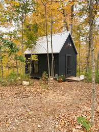

The Forgotten Cabin
Let's read .....
The Forgotten Cabin

Once upon a time, nestled deep within the heart of an ancient forest, there stood a forgotten cabin. The woods were thick and tangled, the air heavy with the scent of pine and the hushed whispers of leaves. This cabin, a relic of times gone by, seemed as if it had been abandoned by both man and time itself.
The cabin had once been a place of warmth and laughter, where families sought refuge from the harsh winters and shared stories by the fireside. But now, it stood forlorn and weathered, its windows shattered, and its wooden planks weary from years of neglect.
Sarah, a young woman with an insatiable passion for history, had stumbled upon a worn and tattered journal in the dusty corner of her local library. It told tales of the forgotten cabin, hidden deep within the woods, and spoke of a treasure hidden within its decaying walls. But it was not the promise of riches that drew Sarah in; it was the longing to uncover the secrets of the past.
Sarah's boyfriend, Thomas, was a man of logic and skepticism. He believed that the journal was nothing more than a collection of old wives' tales and dismissed it as mere folklore. But Sarah's eyes gleamed with excitement, her heart beating in time with the stories she had read. She had to know the truth.
She convinced Thomas to join her on an expedition to find the cabin. As they ventured deeper into the forest, the atmosphere grew increasingly eerie. The mist shrouded the trees like a ghostly veil, and the woods seemed to hold its breath in anticipation.
At last, they came upon the cabin, its silhouette appearing out of the mist like a specter from another time. It loomed before them, a relic of the past, its windows like vacant eyes staring into their souls. The air around it was heavy with a sense of foreboding, but Sarah's curiosity knew no bounds.
They stepped inside, and the creaking floorboards echoed through the silence. Dust motes danced in the feeble light that streamed through broken windows. The cabin was a time capsule, frozen in a moment of history. Old furniture, covered in dusty sheets, stood as silent witnesses to the passage of time.
Sarah and Thomas searched every corner of the cabin, turning over forgotten relics of the past, but they found no treasure, only the echoes of lives once lived. As the hours passed, Thomas grew increasingly frustrated, accusing Sarah of chasing after a mere fairy tale.
But Sarah refused to give up. She continued to explore, her footsteps echoing in the empty rooms. As she reached the back of the cabin, a strange sensation washed over her. She felt as though she were being watched, and a shiver ran down her spine.
Suddenly, a chilling gust of wind swept through the cabin, extinguishing their lantern and plunging them into darkness. Panic set in as they fumbled to relight it, their hearts pounding in the blackness.
When the light returned, they found themselves face to face with a spectral figure – the ghost of the cabin's former owner. The ghostly apparition's eyes were filled with sadness and longing, and it gestured for them to follow.
They were led to a hidden compartment beneath the floorboards, where the ghost revealed a trove of old letters and artifacts. These relics told the story of the cabin's former inhabitants, their joys, their sorrows, and their love for the place they had called home.
As they left the cabin, the atmosphere in the forest seemed to lift, and the woods whispered their gratitude for unearthing the forgotten stories within the walls of the cabin. Sarah and Thomas departed with a newfound appreciation for the mysteries of the past, leaving the cabin and its guardian in peace, no longer forgotten but remembered once more.
Identify the Plot, Atmosphere, Conflict, Theme and Settings in the short story of "The Forgotten Cabin."